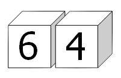

Each of the six faces on a cube has a different digit ($0$ to $9$) written on it; the same is done to a second cube. By placing the two cubes side-by-side in different positions we can form a variety of $2$-digit numbers.
For example, the square number $64$ could be formed:

In fact, by carefully choosing the digits on both cubes it is possible to display all of the square numbers below one-hundred: $01$, $04$, $09$, $16$, $25$, $36$, $49$, $64$, and $81$.
For example, one way this can be achieved is by placing $\{0, 5, 6, 7, 8, 9\}$ on one cube and $\{1, 2, 3, 4, 8, 9\}$ on the other cube.
However, for this problem we shall allow the $6$ or $9$ to be turned upside-down so that an arrangement like $\{0, 5, 6, 7, 8, 9\}$ and $\{1, 2, 3, 4, 6, 7\}$ allows for all nine square numbers to be displayed; otherwise it would be impossible to obtain $09$.
In determining a distinct arrangement we are interested in the digits on each cube, not the order.
But because we are allowing $6$ and $9$ to be reversed, the two distinct sets in the last example both represent the extended set $\{1, 2, 3, 4, 5, 6, 9\}$ for the purpose of forming $2$-digit numbers.
How many distinct arrangements of the two cubes allow for all of the square numbers to be displayed?
solve() → 1217